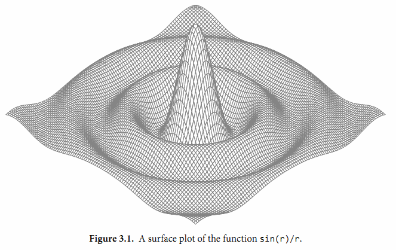

3.2. 浮点数
Go语言提供了两种精度的浮点数，float32和float64。它们的算术规范由IEEE754浮点数国际标准定义，该浮点数规范被所有现代的CPU支持。
这些浮点数类型的取值范围可以从很微小到很巨大。浮点数的范围极限值可以在math包找到。常量math.MaxFloat32表示float32能表示的最大数值，大约是 3.4e38；对应的math.MaxFloat64常量大约是1.8e308。它们分别能表示的最小值近似为1.4e-45和4.9e-324。
一个float32类型的浮点数可以提供大约6个十进制数的精度，而float64则可以提供约15个十进制数的精度；通常应该优先使用float64类型，因为float32类型的累计计算误差很容易扩散，并且float32能精确表示的正整数并不是很大（译注：因为float32的有效bit位只有23个，其它的bit位用于指数和符号；当整数大于23bit能表达的范围时，float32的表示将出现误差）：
var f float32 = 16777216 // 1 << 24
fmt.Println(f == f+1) // "true"!
浮点数的字面值可以直接写小数部分，像这样：
const e = 2.71828 // (approximately)
小数点前面或后面的数字都可能被省略（例如.707或1.）。很小或很大的数最好用科学计数法书写，通过e或E来指定指数部分：
const Avogadro = 6.02214129e23 // 阿伏伽德罗常数
const Planck = 6.62606957e-34 // 普朗克常数
用Printf函数的%g参数打印浮点数，将采用更紧凑的表示形式打印，并提供足够的精度，但是对应表格的数据，使用%e（带指数）或%f的形式打印可能更合适。所有的这三个打印形式都可以指定打印的宽度和控制打印精度。
for x := 0; x < 8; x++ {
fmt.Printf("x = %d e^x = %8.3f\n", x, math.Exp(float64(x)))
}
上面代码打印e的幂，打印精度是小数点后三个小数精度和8个字符宽度：
x = 0 e^x = 1.000
x = 1 e^x = 2.718
x = 2 e^x = 7.389
x = 3 e^x = 20.086
x = 4 e^x = 54.598
x = 5 e^x = 148.413
x = 6 e^x = 403.429
x = 7 e^x = 1096.633
math包中除了提供大量常用的数学函数外，还提供了IEEE754浮点数标准中定义的特殊值的创建和测试：正无穷大和负无穷大，分别用于表示太大溢出的数字和除零的结果；还有NaN非数，一般用于表示无效的除法操作结果0/0或Sqrt(-1).
var z float64
fmt.Println(z, -z, 1/z, -1/z, z/z) // "0 -0 +Inf -Inf NaN"
函数math.IsNaN用于测试一个数是否是非数NaN，math.NaN则返回非数对应的值。虽然可以用math.NaN来表示一个非法的结果，但是测试一个结果是否是非数NaN则是充满风险的，因为NaN和任何数都是不相等的（译注：在浮点数中，NaN、正无穷大和负无穷大都不是唯一的，每个都有非常多种的bit模式表示）：
nan := math.NaN()
fmt.Println(nan == nan, nan < nan, nan > nan) // "false false false"
如果一个函数返回的浮点数结果可能失败，最好的做法是用单独的标志报告失败，像这样：
func compute() (value float64, ok bool) {
// ...
if failed {
return 0, false
}
return result, true
}
接下来的程序演示了通过浮点计算生成的图形。它是带有两个参数的z = f(x, y)函数的三维形式，使用了可缩放矢量图形（SVG）格式输出，SVG是一个用于矢量线绘制的XML标准。图3.1显示了sin(r)/r函数的输出图形，其中r是sqrt(x*x+y*y)。

gopl.io/ch3/surface
// Surface computes an SVG rendering of a 3-D surface function.
package main
import (
"fmt"
"math"
)
const (
width, height = 600, 320 // canvas size in pixels
cells = 100 // number of grid cells
xyrange = 30.0 // axis ranges (-xyrange..+xyrange)
xyscale = width / 2 / xyrange // pixels per x or y unit
zscale = height * 0.4 // pixels per z unit
angle = math.Pi / 6 // angle of x, y axes (=30°)
)
var sin30, cos30 = math.Sin(angle), math.Cos(angle) // sin(30°), cos(30°)
func main() {
fmt.Printf("<svg xmlns='http://www.w3.org/2000/svg' "+
"style='stroke: grey; fill: white; stroke-width: 0.7' "+
"width='%d' height='%d'>", width, height)
for i := 0; i < cells; i++ {
for j := 0; j < cells; j++ {
ax, ay := corner(i+1, j)
bx, by := corner(i, j)
cx, cy := corner(i, j+1)
dx, dy := corner(i+1, j+1)
fmt.Printf("<polygon points='%g,%g %g,%g %g,%g %g,%g'/>\n",
ax, ay, bx, by, cx, cy, dx, dy)
}
}
fmt.Println("</svg>")
}
func corner(i, j int) (float64, float64) {
// Find point (x,y) at corner of cell (i,j).
x := xyrange * (float64(i)/cells - 0.5)
y := xyrange * (float64(j)/cells - 0.5)
// Compute surface height z.
z := f(x, y)
// Project (x,y,z) isometrically onto 2-D SVG canvas (sx,sy).
sx := width/2 + (x-y)*cos30*xyscale
sy := height/2 + (x+y)*sin30*xyscale - z*zscale
return sx, sy
}
func f(x, y float64) float64 {
r := math.Hypot(x, y) // distance from (0,0)
return math.Sin(r) / r
}
要注意的是corner函数返回了两个结果，分别对应每个网格顶点的坐标参数。
要解释这个程序是如何工作的需要一些基本的几何学知识，但是我们可以跳过几何学原理，因为程序的重点是演示浮点数运算。程序的本质是三个不同的坐标系中映射关系，如图3.2所示。第一个是100x100的二维网格，对应整数坐标(i,j)，从远处的(0,0)位置开始。我们从远处向前面绘制，因此远处先绘制的多边形有可能被前面后绘制的多边形覆盖。
第二个坐标系是一个三维的网格浮点坐标(x,y,z)，其中x和y是i和j的线性函数，通过平移转换为网格单元的中心，然后用xyrange系数缩放。高度z是函数f(x,y)的值。
第三个坐标系是一个二维的画布，起点(0,0)在左上角。画布中点的坐标用(sx,sy)表示。我们使用等角投影将三维点(x,y,z)投影到二维的画布中。

画布中从远处到右边的点对应较大的x值和较大的y值。并且画布中x和y值越大，则对应的z值越小。x和y的垂直和水平缩放系数来自30度角的正弦和余弦值。z的缩放系数0.4，是一个任意选择的参数。
对于二维网格中的每一个网格单元，main函数计算单元的四个顶点在画布中对应多边形ABCD的顶点，其中B对应(i,j)顶点位置，A、C和D是其它相邻的顶点，然后输出SVG的绘制指令。
练习 3.1： 如果f函数返回的是无限制的float64值，那么SVG文件可能输出无效的
练习 3.2： 试验math包中其他函数的渲染图形。你是否能输出一个egg box、moguls或a saddle图案?
练习 3.3： 根据高度给每个多边形上色，那样峰值部将是红色（#ff0000），谷部将是蓝色（#0000ff）。
练习 3.4： 参考1.7节Lissajous例子的函数，构造一个web服务器，用于计算函数曲面然后返回SVG数据给客户端。服务器必须设置Content-Type头部：
w.Header().Set("Content-Type", "image/svg+xml")
（这一步在Lissajous例子中不是必须的，因为服务器使用标准的PNG图像格式，可以根据前面的512个字节自动输出对应的头部。）允许客户端通过HTTP请求参数设置高度、宽度和颜色等参数。